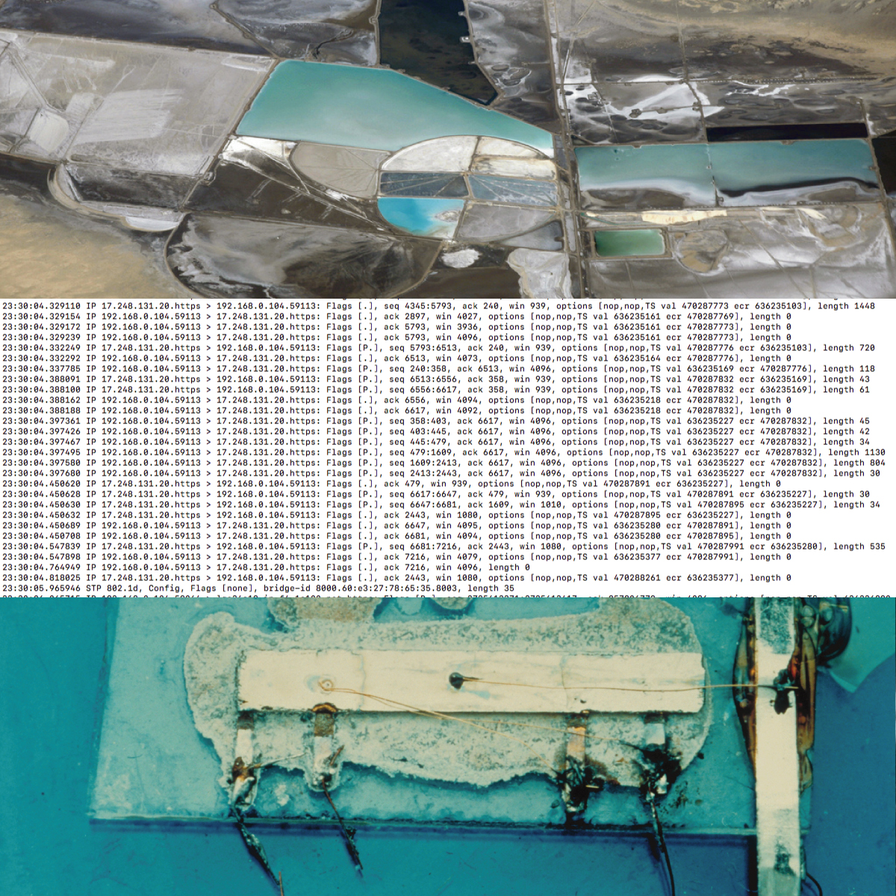
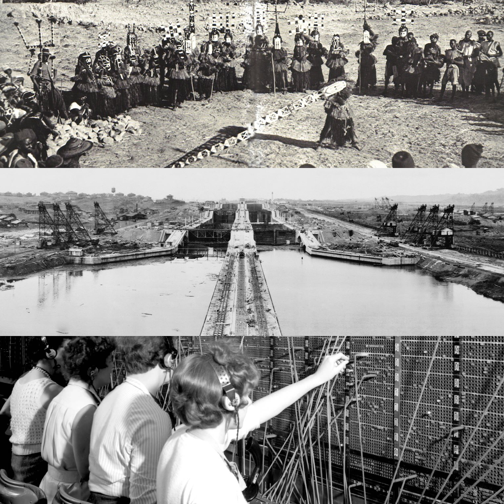

I have taught a range of courses at the PhD, MA, and BA levels that focus on media studies, internet studies, science and technology studies, and cultural studies. I regularly teach the seminar that introduces cultural studies PhD students to science and technology studies as well as the introduction to cultural studies courses for MA and undergraduate students in the English Department. I have also offered special topics courses on big data, internet studies, media studies, science fiction film, and science fiction literature.
I often incorporate multimedia production into my classrooms and have regularly offered courses on web coding and design, graphic design, film editing, and audio editing. While the past two summers has seen this content largely migrated to Blackboard, I do still maintain an old iteration of my ENGH 375/507: Web Authorship and Design course online, a split level MA/BA course that focuses on web coding, which contains some resources that might be of use.
HNRS 360: Coping with the Internet
This course will examine the effects of internet technologies on our everyday lives and look to develop coping strategies so that we can become more intentional about how we use the internet. Students will engage humanities and social science research on internet platforms, social media, smartphones, Internet of Things, logistics, web services and data storage.
Students will learn about issues ranging from screen addiction to trolling to surveillance to advertising to globalization to the environmental impacts of internet technologies. Along the way, students will learn critical strategies for obfuscating their data, managing their privacy settings, controlling their attention, and reducing their carbon footprint.
This course is under development and will be offered through the Honors College at George Mason University in Fall of 2019.

CULT 860: The Politics of Big Data
This course examines the political stakes of past, present, and future big data systems. It begins with readings about big data in general and the shift from surveillance to dataveillance. The bulk of the course focuses on topical examinations of different big data systems and their political and cultural stakes.
Through a combination of academic book selections and articles, science and technology news and magazine articles, podcasts, video lectures, and digital art projects, it examines: Social Data & Advertising (Facebook), Recommendation Engines (YouTube), Climate Modeling, Criminal Justice (Predictive Policing & Recidivism Modeling), Redlining & Housing Segregation, Gerrymandering, Consumer Credit & Predatory Lending, Education & Standardized Testing, Dataveillance of Children, and Big Data Labor Practices (Amazon Mechanical Turk). The course closes with a unit on how we might resist the power of big data systems.

ENGH 676: Intro to Cultural Studies
This course provides an introduction to the field of cultural studies. Throughout the semester we examine central texts in cultural studies, work to extract from those readings a coherent set of theories and methodologies that we might apply to cultural objects, and begin to analyze cultural objects themselves in light of these theories and methods to discover the social, cultural, political, economic, and aesthetic contexts in which they are embedded.
Special focuses of the course currently include, but are not limited to: Marxism, Globalization, Nationalism, Public Sphere Theory, Decolonialism, Critical Race Studies, the Alt-Right, Black Feminism, Queer Theory, Internet Studies, Science and Technology Studies, and Environmental Studies.

ENGH 470: Science & Technoculture
This course examines the history of film through the lens of science and technoculture. First, we will try to better understand the ways in which science and technology are represented in film. Conversely, we will examine the role that film plays in speculating about the future impact of new sciences and technologies, as well as its role in integrating new technologies into the cultural imaginary.
Over the course of the semester we will take a look at the historical trajectory of science fiction film to get a better understanding of the genre that has dominated the audio-visual representation of science and technology. We will analyze these films to gain a better understanding of the convergence of technology and culture, and subsequently to examine key concepts and debates surrounding embodiment, intelligence, communication, surveillance, automation, artificial intelligence, robotics, cloning, transhumanism, posthumanism, simulation, and virtual reality.